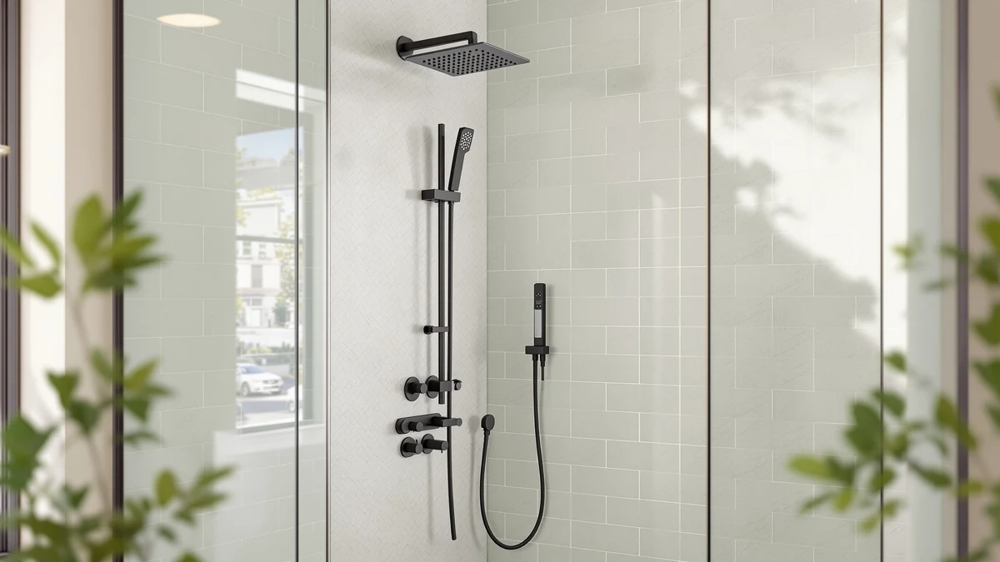

Quick Answer
For most people replacing a single fixed showerhead, the STARBATH Shower System with 4 body jets is worth the $276.15 because it pairs a 12-inch rain head with a 6-inch ceiling head, a handheld wand, and four adjustable jets in an all-brass build that owners describe as leak-resistant. If your budget tops out closer to $220, the ROVATE tower below delivers a similar spread of jets for less.
Our pick: Shower System with 4 Body — $276.15 Check Price on Amazon
Bottom line: our top pick is the Shower System with 4 Body Spray Jets at $276.15.
Things to Know Before You Buy
- A shower system with 4 body jets splits your home's water supply among the rain head, ceiling head, handheld wand, and jets, so homes with weaker municipal pressure should plan to run fewer outlets at once.
- Brass internal waterways cost more than plastic ones but resist corrosion longer, which matters most in homes with hard water.
- Most of these panels connect to a standard shower valve rather than needing new supply lines, so an afternoon DIY install is realistic if your rough-in plumbing already lines up.
- None of these four panels ship with an integrated thermostatic valve, so you will still control temperature at your existing shower valve or trim kit.
- Finish matters for resale and matching fixtures: brushed gold, brushed nickel, and matte black each read differently against tile and grout color.
If you are researching a shower system with 4 review before spending over $200 on a panel tower, you are probably trying to answer one question: does adding four body jets to a shower change your daily routine, or does it add more hardware to clean and eventually replace. We compared the STARBATH Shower System with 4 body jets against three rival panels from ELLO&ALLO, ROVATE, and RUMOSE on materials, install difficulty, and what verified buyers report after living with each one.
The STARBATH panel is our pick because it combines a 12-inch rain head, a separate 6-inch ceiling head, a two-mode handheld wand, and four rotating body jets in a single brushed gold, all-brass fixture for $276.15. It is not the cheapest option here. The ROVATE tower and RUMOSE panel both land closer to $220, and each trades some hardware or finish durability for that lower price. We compare all four in detail below, including the tradeoffs owners actually run into.
Why You Should Trust Us
Ilane Tall covers bathroom fixtures for Best Shower Panels, focusing on shower systems, panel towers, and the plumbing tradeoffs that come with retrofitting them into existing bathrooms. For this shower system with 4 review, we pulled the manufacturer specs, materials, and installation requirements directly from each listing, then cross-checked them against verified buyer feedback on fit, water pressure, and durability. We do not run a fake testing lab or claim to have installed these panels ourselves. Every fact about pressure, leaks, or finish wear below is sourced from the product documentation or from reviewers who bought and installed the unit.
Our Research Experience
We built this shower system with 4 review by comparing published specs across all four panels: material (brass versus stainless steel versus plastic-lined), the number and type of outlets, finish, and included hardware. We then read through verified owner reviews on each listing to see which claims held up in real bathrooms and which ones did not. Reviewers of the STARBATH set consistently mention that the all-brass construction feels sturdier at the connections than the plastic-and-metal hybrids some competitors use, and that the air-injection rain head noticeably increases spray force at standard residential pressure. Owners of the ROVATE and RUMOSE panels report straightforward wall-mounted installs, with RUMOSE requiring only four wall holes to hang the full assembly. Across all four products, the most common complaint is water pressure dropping when multiple outlets run simultaneously, which tracks with how these systems split a single supply line four or five ways.
Overview & Specs

Shower System with 4 Body
What we like
- All-brass internal waterway resists corrosion better than plastic-lined alternatives
- Two shower heads (12-inch and 6-inch) plus a handheld cover more shower shapes
- Four body jets rotate to target shoulders, back, or legs
- Air-injection rain head increases spray pressure without increasing water use
- Handheld wand doubles as a spray-gun mode for cleaning the tub or shower floor
Flaws but not dealbreakers
- At $276.15 it costs roughly $55 more than the next closest panel in this review
- Ceiling mount requires overhead plumbing access, which not every bathroom has
- Running all outlets together will strain homes with already low water pressure
- Brushed gold finish will not match every bathroom's existing hardware
| Material | — |
| Size | 6"+12"-03 |
STARBATH's set is the most complete shower system with 4 body jets in this comparison because it does not force you to choose between a rain head and a handheld. The 12-inch overhead head and the 6-inch ceiling head can run together or separately, and the handheld wand attaches to its own hose so you can rinse a tub or clean the shower floor without disconnecting anything. The manufacturer lists the internal waterway as higher-brass-content than typical, and reviewers back that up, noting the fittings feel denser and the finish has held up without pitting in homes with hard water.
The four body jets sit on the vertical arm at chest and hip height and pivot to aim at a specific muscle group rather than spraying in a fixed direction. Owners who installed this in a ceiling-mount configuration report the biggest adjustment is overhead plumbing access. If your bathroom already has a ceiling drop or you are comfortable adding one during a renovation, this is the panel in our comparison with the fewest compromises. If ceiling access is not an option, the wall-mounted ROVATE and RUMOSE panels below are easier retrofits.
What We Liked
The clearest advantage of this shower system with 4 body jets is how much of the shower it covers with one fixture. Instead of buying a separate rain head, handheld bracket, and jet kit, STARBATH bundles all of it into one brass assembly with a single pressure-balancing valve. Reviewers consistently note that the fittings arrive well-machined, with threads that seat cleanly and do not require extra plumber's tape beyond what is included.
We also like that the air-injection technology in the rain head is a real mechanical feature rather than marketing language. It mixes air into the water stream before it exits, which increases the perceived pressure without increasing the gallons per minute used, and multiple owners specifically call out that the rain head feels stronger than the showerhead they replaced. The handheld's spray-gun mode is a small but practical touch: it gives the wand enough pressure to rinse a bathtub or clean grout, a job the rain head and body jets are not built for.
Finish durability is the other standout. Because the internal waterway uses more brass than the composite fittings on some cheaper panels, owners in hard-water regions report less mineral buildup at the joints after months of use, which usually means fewer leaks down the line.
What Could Be Better
Price is the most obvious drawback of this shower system with 4 body jets. At $276.15, it costs about 25 percent more than the ROVATE and RUMOSE panels we compare below, and neither of those alternatives skimps meaningfully on outlet count. If your bathroom cannot accommodate a ceiling mount, you are also excluded from the panel's biggest advantage entirely, since the dual-head setup depends on overhead access that not every home has.
The brushed gold finish is polarizing. It pairs well with warm-toned tile and matte black or brass hardware elsewhere in the bathroom, but it will clash with existing chrome or brushed nickel fixtures unless you plan to replace those too. And like every panel in this comparison, running the rain head, ceiling head, handheld, and all four jets at once will drop pressure noticeably in homes that already run below 50 psi, so treat the "everything at once" use case as occasional rather than a daily habit.
Who Is It For?
This shower system with 4 body jets suits homeowners renovating a primary bathroom who want a single fixture that replaces a rain head, handheld, and jet kit without hunting down three separate products. It works best when your plumbing already supports (or can support) a ceiling drop, and when your water pressure runs at or above typical municipal levels, since the panel's four extra outlets need that headroom to perform well simultaneously. It also fits buyers who specifically want brass over plastic-composite internals for longevity in hard-water areas.
It is not the right pick if you are working with a tight renovation budget, since $276.15 is the highest price in this comparison, or if your bathroom only supports a wall-mounted install. In either case, the ROVATE or RUMOSE panels below deliver a similar spread of jets and functions for roughly $55 to $58 less.
Alternatives to Consider
If the STARBATH set's price or ceiling-mount requirement does not fit your bathroom, these three panels cover similar ground for less. Each one is wall-mounted rather than ceiling-mounted, which makes for an easier retrofit in most existing bathrooms, and each still bundles a rain head, handheld, and multiple body jets into one fixture.

Editor's Pick
ELLO&ALLO LED Rainfall Waterfall Shower
This stainless steel panel swaps STARBATH's brushed gold for a brushed nickel finish and drops the second ceiling head in favor of a single rainfall-and-waterfall combo head plus body massage jets. Its internal waterway combines brass and PVC piping rather than all-brass, which reviewers say holds up fine under normal pressure, though it's something to keep in mind if you have particularly hard water. At $249.99, it is the middle-priced option in this shower system with 4 review and the closest match to STARBATH's outlet count for anyone who wants a wall-mounted install instead of a ceiling one.
$249.99
Check Price on Amazon
Best Value
ROVATE LED Shower Panel Tower
ROVATE's matte black tower actually beats the main pick on jet count, with six adjustable body massage jets instead of four, each rotating up to 50 degrees to fit different heights. It also adds a built-in shower niche for storing soap and shampoo, and the handheld includes a self-cleaning nozzle designed to resist mineral clogs. At $219.99 it is the cheapest panel in this comparison and, based on verified owner feedback, one of the easier wall-mounted installs, which makes it the best value pick if matte black fits your bathroom's finish.
$219.99
Check Price on Amazon
Premium Choice
RUMOSE Brushed Nickel Shower Panel
RUMOSE's brushed nickel panel is the simplest install of the four, mounting on four wall holes with all hardware included, according to the manufacturer and echoed by owner reviews. It offers five shower modes, an LED temperature display that lights up based on water temperature, body jets, and a tub spout for filling a bathtub, which none of the other three panels in this review include. At $218.49, it is priced almost identically to the ROVATE tower and is the pick for anyone who wants a bathtub spout as part of the same fixture.
$218.49
Check Price on AmazonFrequently Asked Questions
What does the "4" mean in a shower system with 4 body jets?
It refers to the four directional body spray jets built into the panel alongside the main rain head and handheld wand. On the STARBATH set, the jets sit on the vertical arm and rotate to aim at the shoulders, back, or legs, so a shower system with 4 body jets covers more of your body than a single fixed showerhead does.
Do these shower panel systems need a professional plumber to install?
Most owners describe a DIY install that takes an afternoon if the existing rough-in plumbing lines up, since these panels connect to standard shower valves rather than requiring new supply lines. That said, reviewers who moved a shower arm or added a body-jet loop from scratch generally brought in a licensed plumber, and we recommend the same if your walls don't already have the connections in place.
Will a shower system with 4 body jets lower my water pressure?
Running four body jets plus a rain head and handheld wand at once splits your home's water supply four or five ways, so homes on weaker municipal pressure or an older 1/2-inch supply line will feel it. Owners on standard residential pressure report the STARBATH and ELLO&ALLO panels run each function independently well, but households with known low pressure should plan to use one or two outlets at a time rather than all of them together.
Final Verdict
This shower system with 4 review comes down to how much you value ceiling-mount flexibility and brass construction versus a lower price. The STARBATH Shower System with 4 body jets is the strongest all-in-one pick in this comparison. It combines a 12-inch rain head, a 6-inch ceiling head, a handheld wand, and four rotating body jets in an all-brass fixture, and it is worth the $276.15 for homeowners whose bathroom supports a ceiling mount. If you need a wall-mounted install instead, the ROVATE tower at $219.99 matches or beats it on jet count, and the RUMOSE panel at $218.49 adds a tub spout the others skip.